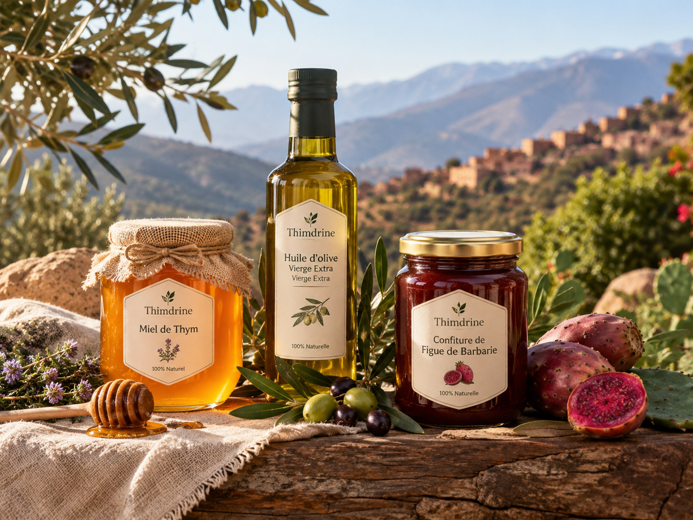
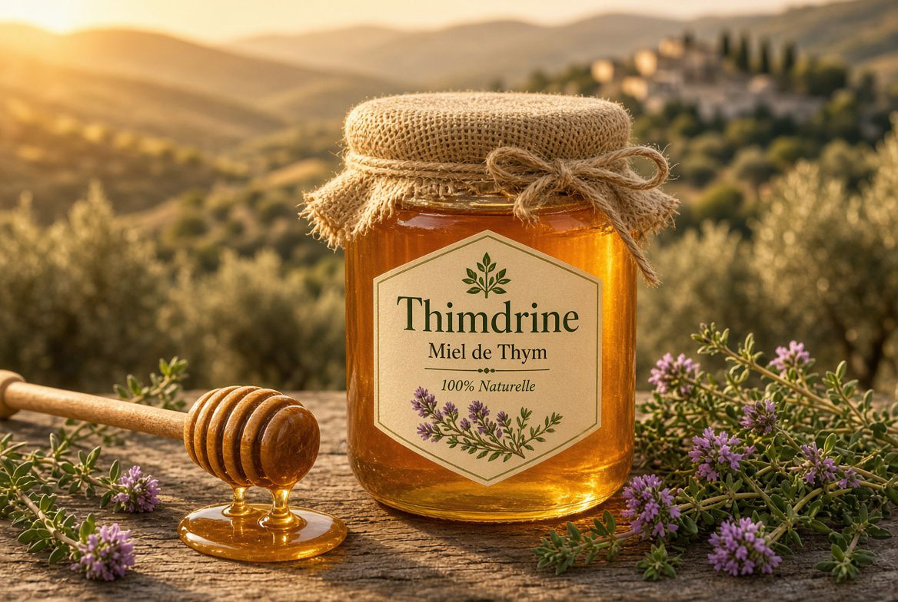
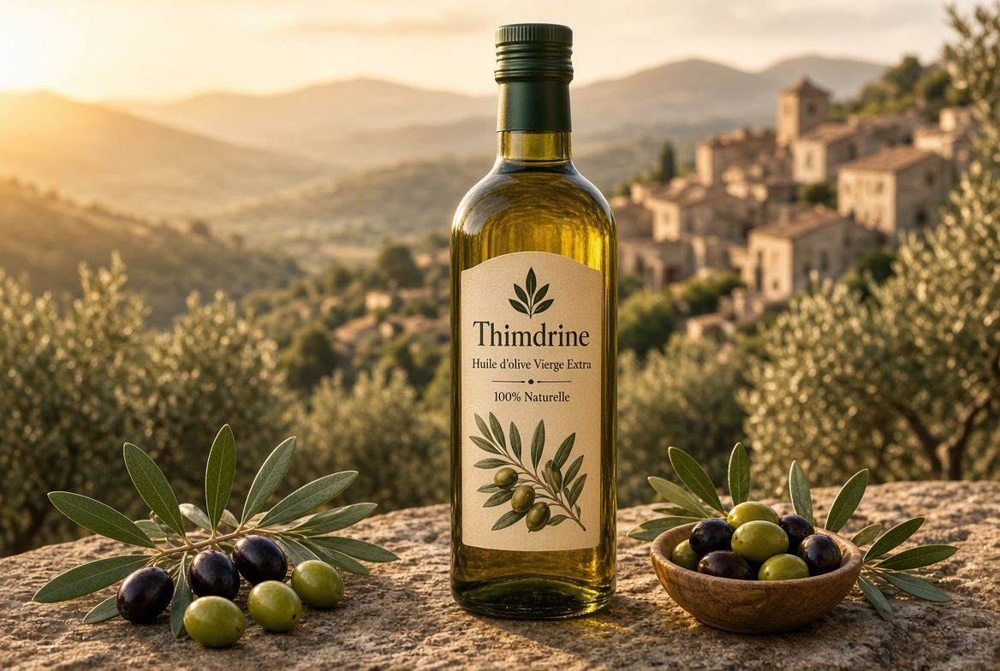
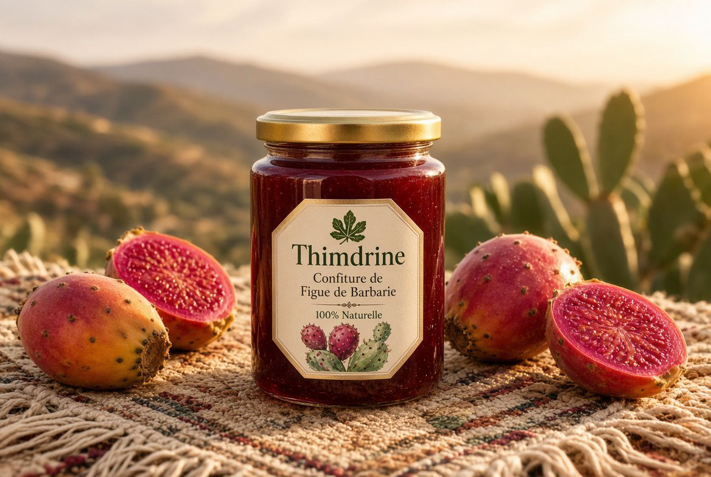

COOPÉRATIVE DE FEMMES · NADOR
Le goût du Rif, récolté à la main par 25 femmes
Miel de thym, huile d'olive et confiture de figue de barbarie : des produits du terroir sans additifs, du champ jusqu'à votre table.

COOPÉRATIVE DE FEMMES · NADOR
Miel de thym, huile d'olive et confiture de figue de barbarie : des produits du terroir sans additifs, du champ jusqu'à votre table.

Créée en 2015 dans la région de Nador, la coopérative Thimdrine réunit 25 femmes qui récoltent, transforment et conditionnent elles-mêmes leurs produits.
Nos ruches sont installées dans les collines de thym sauvage du Rif, nos oliviers poussent sur les terrasses familiales et nos figues de barbarie sont cueillies à la main chaque été.
Lire l'histoire de la coopérative →Les trois produits qui ont fait la réputation de Thimdrine sur les marchés de Nador.

Un miel ambré au goût puissant, récolté dans les collines du Rif.

Première pression à froid, fruitée et légèrement poivrée.

Douce et parfumée, préparée en petites quantités chaque été.
Envie de goûter au Rif ?
Envoyez-nous votre demande de commande : nous vous répondons sous 48 heures pour organiser la livraison ou le retrait à Nador.
Faire une demande de commandeRoute de Selouane, Nador, Maroc
Tél. : 06 73 14 24 86
E-mail : youssef.lakhal.1211@gmail.com
Du lundi au samedi
de 9 h à 18 h